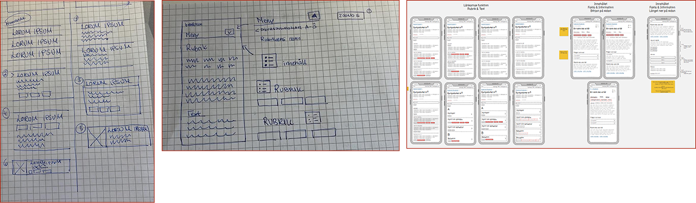
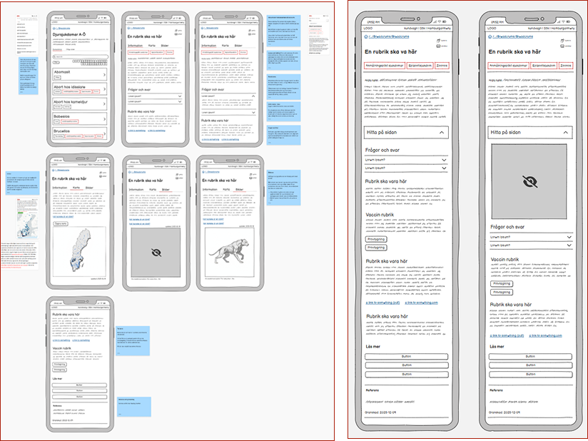
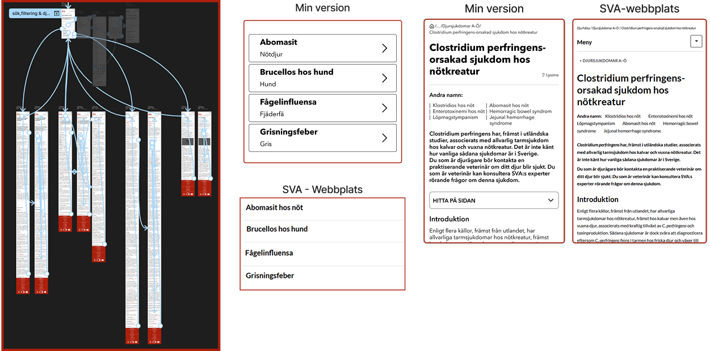
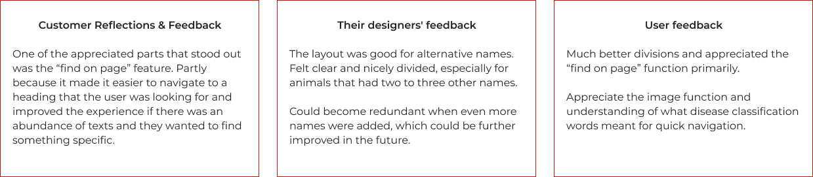

Background
Statens veterinärmediciska anstalt (SVA) is a government agency responsible for Sweden's animal health, food safety and, by extension, national preparedness. As a government entity, they must comply with the DOS Act and must ensure that their digital services meet the accessibility requirements according to DIGG's interpretation. In 2025, SVA's new website was launched, which required a general review of their website. Together with SVA, we were tasked with reviewing their inclusive interface design and ensuring that the website met DIGG's interpretation of the DOS Act. The review included, among other things, contrasts, heading hierarchy, reading order and tables that could appear on the website.
Goals
- Inclusive UI Design & WCAG
- Accessibility adaptation for mobile view
- Gain new user survey data
- Meausures that provide the greatest benefit to users - Information volume, insights, and accessiblity.
Challenges
Find test users who may have some form of disability. Find evidence to review their website using our WCAG insights and a mobile-friendly demo. Identify issues and improvements for design, structure, and interaction that can be improved on the website.
The Design processen
The design process went through many WCAG exercises and research processes to produce a design that could reach the level of both double and triple A levels. We went through User journeys, pain points and personas to obtain sufficient data. We were also given access to several PDF files from their previous website, which gave us the opportunity to analyze and conduct research and user testing on their previous site. Below are some parts of my design process that I presented.

Results
Low-fiedlity-prototyp
Started to visualize my ideas and how the solutions could have looked from different perspectives. Created some sketches and then designed some tests in balsamiq for quick thoughts and reflections.
Based on the first iterations, I put together some design suggestions and got some answered questions from the group, and based on feedback, I took them to further user tests that were presented.

Mid-fiedlity-prototyp
My draft for the client resulted in the result below, where I made my first prototype that was clickable in balsamiq. I wrote post-its on what and why I made the changes, which I thereby explained and received some constructive feedback which helped me into my high-fidelity.

High-fidelity prototype
Together with the group, we looked at the graphic profile and tried
to create a holistic direction when it came to color, shape, font
and icons. I developed four flows that contained all the parts that
could be included in pages about animal diseases, such as:
Find on the page
Questions and answers
Clear buttons
As well as placement of text and images in technical texts.
My developed examples:
Abomasitis - Flow & structure
Brucellosis in dogs - Veterinarian/private person structure
Avian influenza - map & Content text with links
Swine fever - Image and structure
Here is the submission for the test protocol from users and the customer's feedback, which I have analyzed and iterated throughout the process. (the protocol is made in swedish)
The test protocol, pdf file: Test protocol

Reflections & feedback
- Gave suggestions for improvements that were appreciated.
- Gained a broader understanding of how important usability was.
- How we can include more people in the design.
- Difficulties with authorities and what is doable
- My first improved test protocol
Feedback from customer & users
